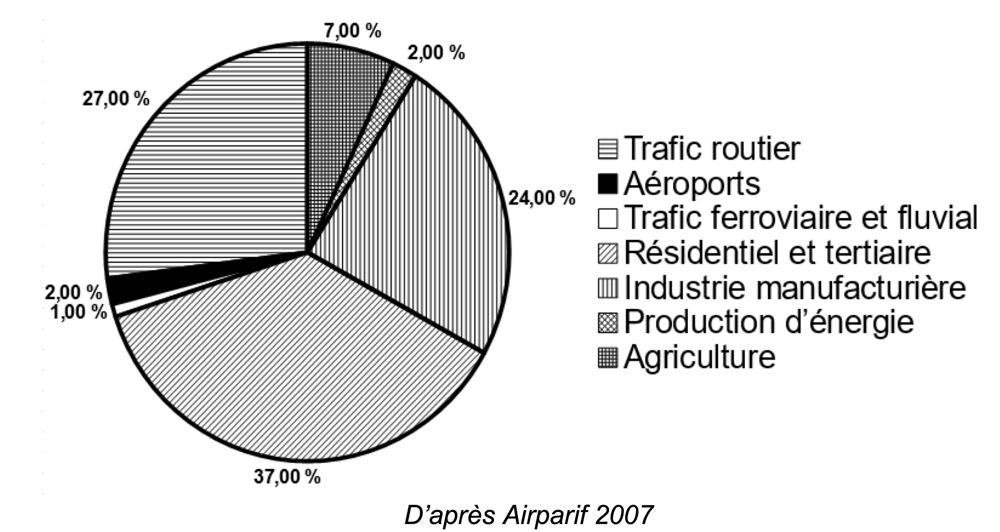
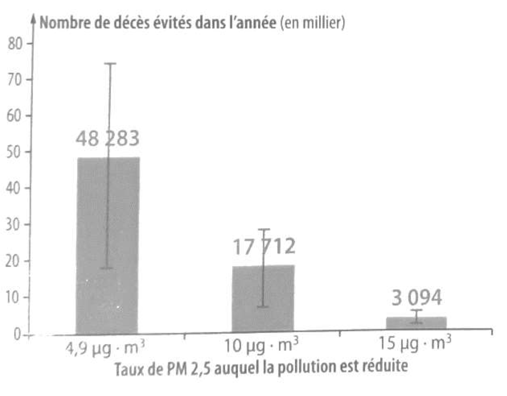

La combustion de carburants fossiles et de la biomasse libère du dioxyde de carbone qui a un impact environnemental majeur.
Il est également reconnu par l’Organisation mondiale de la santé (OMS) que la santé publique est impactée par la pollution de l’air. Le Ministère des Solidarités et de la Santé estime qu’environ 48 000 personnes décèdent chaque année des effets de la pollution de l’air en France.
On se propose d’étudier la part et les impacts de la combustion de carburants fossiles et de biomasse sur la santé humaine.
Document 1
Production de dioxyde de carbone lors de la combustion de carburants fossiles et de la biomasse
| Combustible | Équation de la réaction |
|---|---|
| Gaz naturel méthane $\ce{CH4}$ | $\ce{CH4 + 2 O2 -> CO2 + 2 H2O}$ |
| Essence modélisée par l’octane $\ce{C8H18}$ | $\ce{2 C8H18 + 25 O2 → 16 CO2 +18 H2O}$ |
| Biomasse (bois) modélisée par $\ce{C6H10O5}$ | $\ce{C6H10O5 + 6 O2 → 6 CO2 + 5 H2O}$ |
Énergie massique libérée par kg de combustible brûlé
| Combustible | Gaz naturel | Essence | Biomasse |
|---|---|---|---|
| Energie massique libérée | $\pu{50 MJ.kg-1}$ | $\pu{45 MJ.kg-1}$ | $\pu{17 MJ.kg-1}$ |
Masse de $\ce{CO2}$ produite pour 1 MJ d’énergie obtenue
| Combustible | Gaz naturel | Essence | Biomasse |
|---|---|---|---|
| Energie massique libérée | $\pu{56 g}$ | À calculer à la question 5. | $\pu{95 g}$ |
- Indiquer le (ou les) combustible(s) mentionnés dans le Document 1 pouvant être utilisés comme source(s) d’énergie renouvelable.
Réponse
Le gaz naturel et l’essence sont des sources d’énergie fossiles. Seul le bois peut se renouveler assez rapidement pour que le stock d’énergie qu’il constitue soit considéré comme renouvelable.
- Calculer la masse d’essence, notée $m_{\text{essence}}$, nécessaire pour obtenir une énergie de valeur $\pu{1 MJ}$.
Réponse
D’après le tableau, l’énergie massique de l’essence vaut $e_m (\text{essence}) = \pu{45 MJ.kg-1}$. L’énergie libérée par une masse $m_{\text{essence}}$ d’essence vaut donc $E (\text{essence}) = m_{\text{essence}} \cdot e_m (\text{essence})$.
On cherche ici la masse d’essence responsable d’une énergie libérée $E (\text{essence}) = \pu{1 MJ}$ à partir de la formule précédente, on voit que la masse est telle que
$$
m_{\text{essence}} = \dfrac{E (\text{essence})}{e_m (\text{essence})} = \dfrac{ \pu{1 MJ} }{ \pu{45 MJ.kg-1} } = \pu{2,2e-2 kg} = \pu{22 g}
$$
- Sachant que la masse d’une mole d’essence est égale à $\pu{114 g}$, vérifier que la quantité de matière, notée $n_{\text{essence}}$, présente dans la masse d’essence nécessaire pour obtenir une énergie de valeur $\pu{1 MJ}$ vaut environ : $n_{\text{essence}} = \pu{0,2 mol}$.
Réponse
$n_{\text{essence}} = \dfrac{m_{\text{essence}}}{M_{\text{essence}}} = \dfrac{ \pu{22 g} }{ \pu{114 g.mol-1} } = \pu{0,19 mol}$
- À l’aide de l’équation de la réaction modélisant la combustion de l’essence, vérifier que la quantité de matière de dioxyde de carbone produite $n(\ce{CO2})$ est telle que $n(\ce{CO2})= 8\, n_{\text{essence}}$.
Calculer $n(\ce{CO2})$.
Réponse
Les nombres stœchiométriques de l’équation de la réaction chimique nous apprennent que lorsque 2 moles d’octanes $\ce{C8H18}$ réagissent, elles le font avec 25 moles de dioxygène $\ce{O2}$ et qu’il se forme alors 16 moles de dioxyde de carbone $\ce{CO2}$ et 18 moles d’eau $\ce{H2O}$.
On voit qu’il se forme toujours 8 fois plus de dioxyde de carbone qu’il ne disparaît d’octane. On a donc bien $n(\ce{CO2})= 8\, n_{\text{essence}}$.
$n(\ce{CO2})= 8 \times \pu{0,19 mol} = \pu{1,6 mol}$.
- La masse d’une mole de dioxyde de carbone étant égale à $\pu{44 g}$, déterminer la masse de $\ce{CO2}$ libérée dans l’atmosphère par la combustion de l’essence pour obtenir une énergie de valeur $\pu{1 MJ}$.
Réponse
$m(\ce{CO2}) = n(\ce{CO2}) \cdot M(\ce{CO2}) = \pu{1,6 mol} \times \pu{44 g.mol-1} = \pu{69 g}$.
- Comparer la masse de dioxyde de carbone émise par MJ produit pour chaque combustible du Document 1 et indiquer quel est l’impact environnemental majeur du dioxyde de carbone.
Réponse
-
Le gaz naturel est celui qui rejette le moins de dioxyde de carbone lors de sa combustion avec $\pu{56 g}$ par MJ, suivi par l’essence avec $\pu{70 g}$ et enfin la biomasse avec \pu{95 g}$.
-
Le dioxyde de carbone est un gaz à effet de serre dont l’accumulation dans l’atmosphère est responsable du dérèglement climatique.
Document 2
Répartition (en %) par grands secteurs d’activité des émissions annuelles de particules fines de dimensions inférieures à $\pu{2,5 \mu m}$ (PM 2,5) en Ile-de-France
- Identifier les 3 secteurs d’activité émettant le plus de particules fines, à partir du Document 2.
Réponse
Le Document 2 montre que le trafic routier (27%), l’industrie manufacturière (24%) et le résidentiel et tertiaire sont les 3 secteurs d’activité qui émettent le plus de particules fines.
Document 3
Impacts sanitaires de la pollution de l’air en France (rapport de 2016)
La plupart des sources de pollution atmosphériques émettent des particules fines de diamètre inférieur à 2,5 micromètres (PM 2,5) : transports, résidentiel/tertiaire, agriculture, industrie. Leur contribution relative à la pollution atmosphérique varie cependant selon le lieu.
Désirant déterminer l’effet qu’une réduction de pollution aurait sur la mortalité prématurée en France, les chercheurs ont recueilli pour l’année 2007 les mesures de concentrations moyennes en particules fines PM 2,5 et le nombre total de décès.
Ils ont ensuite appliqué une relation mathématique, établie dans des études précédentes, afin de calculer l’effet de différents scénarios :
- réduction à $\pu{4,9 \mu g.m-3}$, valeur que l’on peut mesurer dans des villages de haute montagne à faible activité économique ;
- réduction à $\pu{10 \mu g.m-3}$, valeur recommandée par l’OMS ;
- réduction à $\pu{15 \mu g.m-3}$, objectif fixé par le Plan national santé–environnement de 2009.
La population française en 2019 est de 65 millions d’habitants.
Nombre de morts qui auraient été évités dans l’année selon la modélisation réalisée par les chercheurs
- À partir de l’étude présentée dans le Document 3, rédiger un texte argumenté expliquant la signification du chiffre : « 48000 décès par an en France sont dus à la pollution ».
Réponse
- Les particules fines rejetées sont à l’origine de la pollution de l’air. En réduisant leur rejet, on réduit la pollution de l’air et ainsi on réduit le nombre de morts prématurées.
- Si l’on parvenait à obtenir un air aussi peu pollué que celui des villages de haute montagne, alors on éviterait 48 000 morts prématurées par an.
- Si on prend l’air des villages de haute montage comme référence (aucune pollution), on peut considérer que le nombre de morts évitées dans ce scénario représente le nombre de morts dues à la pollution.